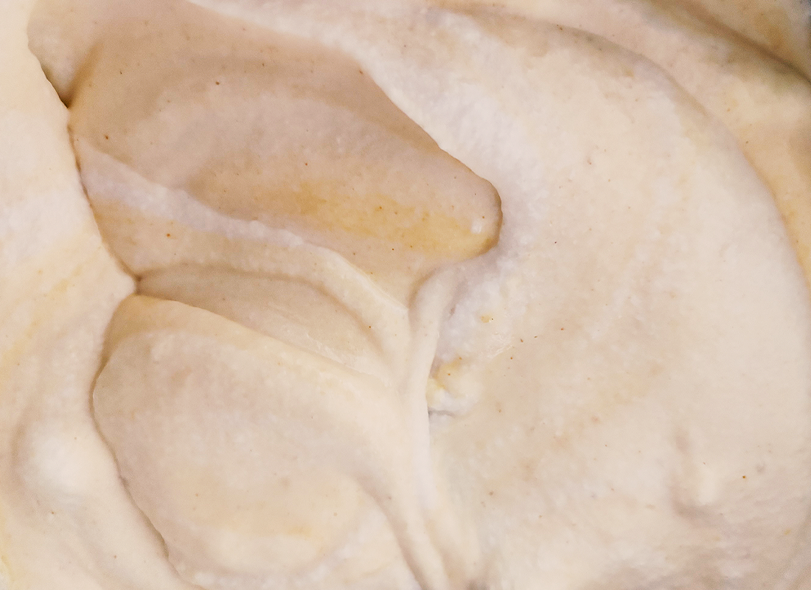
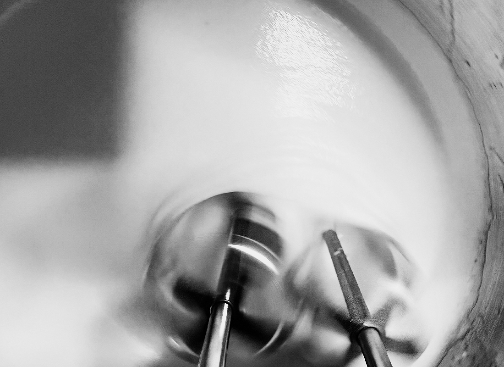
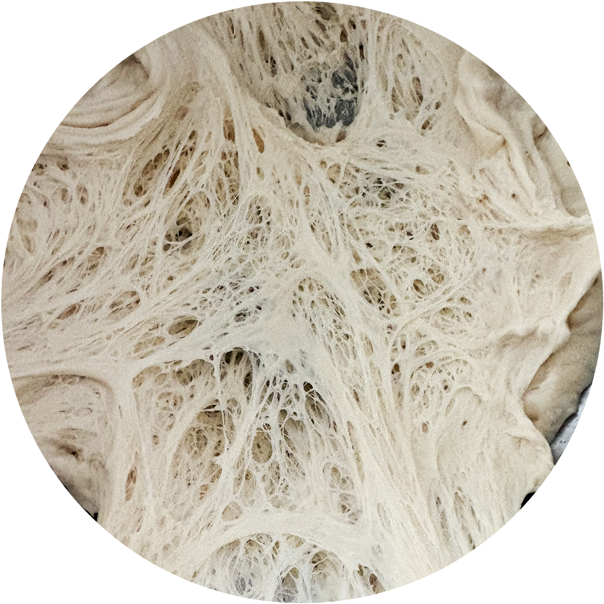
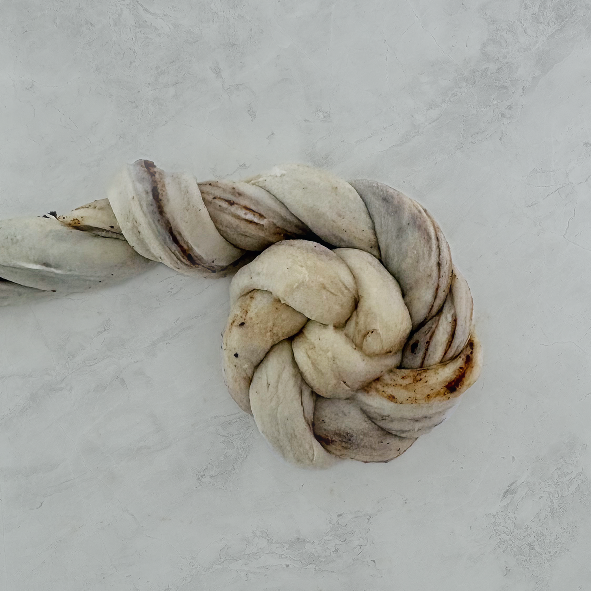
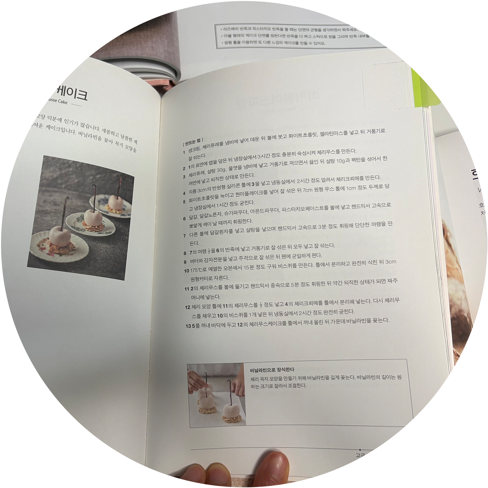
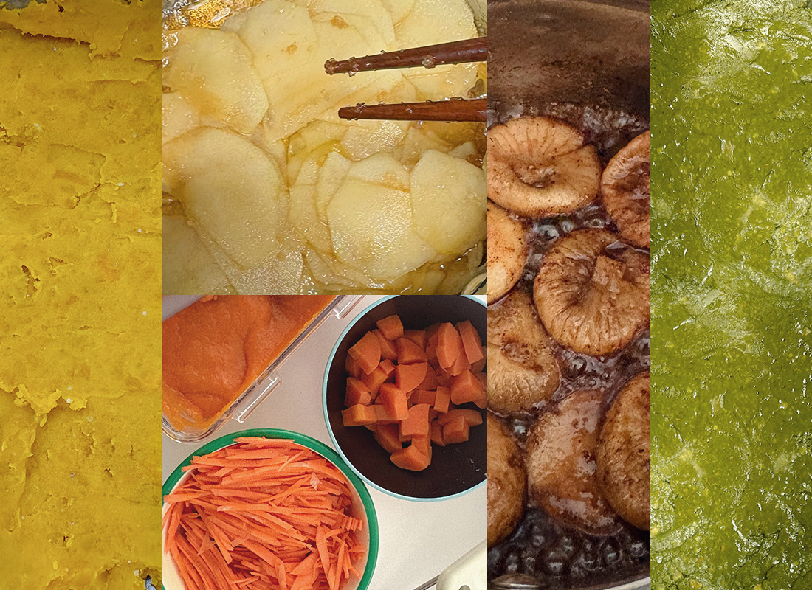
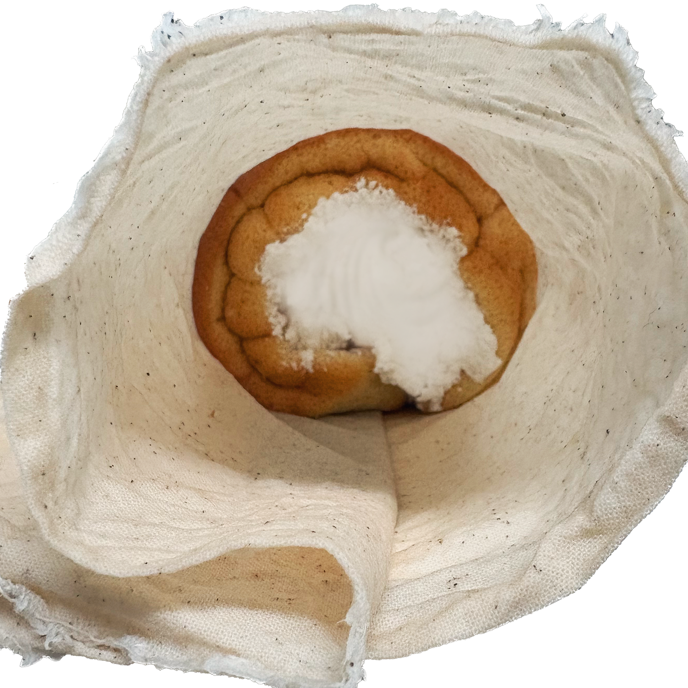
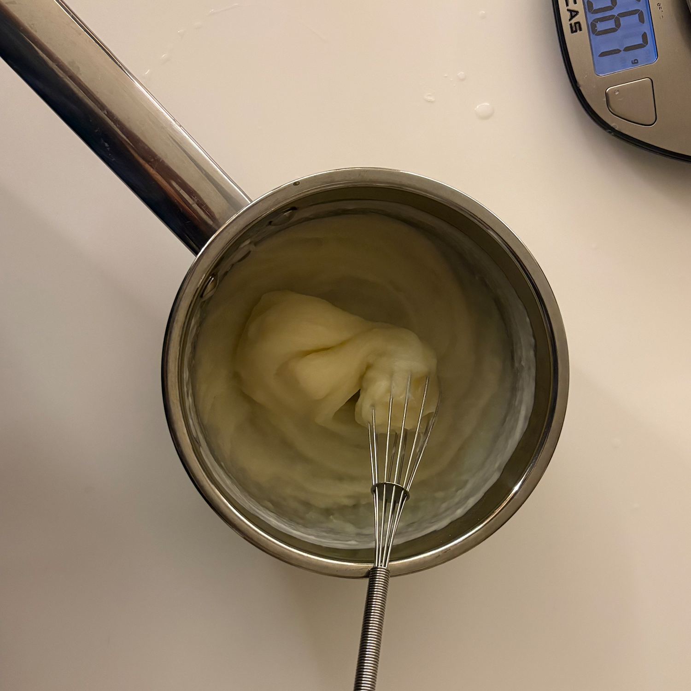

90% struggle, 10% meaning. and that made all.
My Notes

반죽에는 정의는 있지만 정답은 없다고 생각한다.
마들렌의 실패로 시작된 반죽에 대한 호기심은, 해도 해도 여전히 어렵다.
가볍고 촉촉한 별립법이 좋아 한동안은 무엇을 만들어도 머랭을 먼저 올렸다.
하지만 요즘은 공립법이 주는 윤기와 풍미, 그리고 무게를 견디는 안정감에 더 끌린다.
제빵에서는 더 변덕스럽다.
르방에 집착하다가 천연발효에 대한 호기심이 생겨, 온갖 재료를 발효시켜보았다.
공정의 미숙함과 재료의 한계로 실패는 반복되지만, 그 과정 자체가 쌓이고 있다.
그래도 내일의 더 나은 빵을 위해 오늘 밤 반죽을 준비해둔다.
설렘으로 눈을 뜨는 내일을 위해.


공정보다 더 어려운 건 재료의 활용이다.
프랑스 밀, 이탈리아 밀, 호밀까지… 이제 좀 알겠다 싶던 발효와 숙성이 다시 흔들린다. 그래 언제 한번에 성공했다고. 다시 테스트.

풍미와 단단함, 식감에서 미묘한 차이가 생긴다.
버터를 어디까지 휘핑할 것인지, 유화에 집착해야 하는지 말아야 하는지.
계란은 또 어떤가.
왜 흰자와 노른자 두개가 들어있 이렇게 다른 결과를 만드는지.

좋은 버터를 써보고, 바닐라빈도 직접 까본다.
토핑을 좋아해 이것저것 욕심도 내본다.
비용은 세 배를 썼는데, 맛도 세 배가 되어야 하지 않을까.
재료가 좋으면 맛있단 말이 모두는 아닌가보다.

빵을 잘하는 나라는 많다.
그보다 더 많은 건, 빵을 잘하는 빵집들이다.
먹을 빵이, 배울 빵이 별보다 많다.
이 정도면 질릴 틈이 없다.
라면이 질리지 않듯, 빵도 질린 적이 없다.
여행을 가면 음식 냄새보다 빵 냄새에 먼저 반응한다.
꽤 확실한 빵순이다.

정보가 넘쳐나는 요즘이다.
도서관에서 딱 5권만 집어 올 수 있어 취미-제빵 코너에서 한참을 고르고 골라 데려온다.
유튜브와 SNS에서는 먹음직스러운 레시피가 쏟아진다.
어느새 장바구니에는 재료가 하나씩 더 담긴다.
그만 좀 만들라는 잔소리는… 잘 안 들린다.

정보가 넘쳐나는 요즘이다.
도서관에서 딱 5권만 집어 올 수 있어 취미-제빵 코너에서 한참을 고르고 골라 데려온다.
유튜브와 SNS에서는 먹음직스러운 레시피가 쏟아진다.
어느새 장바구니에는 재료가 하나씩 더 담긴다.
그만 좀 만들라는 잔소리는… 잘 안 들린다.

좋아하는 빵을 실컷 먹을 수 있는 것도 장점.
물론… 비용은 전혀 귀엽지 않다.
그리고 또 하나,
사랑하는 사람에게 마음이 담긴 선물을 할 수 있다는 것.
쿠키에서 케이크까지 가는 데 꽤 오래 걸렸다.
내 입에 들어가는 게 아닐 때는,
이상할 만큼 더 신중해진다.

빵을 잘하는 나라는 많다.
그보다 더 많은 건, 빵을 잘하는 빵집들이다.
이 정도면 질릴 틈이 없다.
라면이 질리지 않듯, 빵도 질린 적이 없다.
여행을 가면 음식 냄새보다 먼저 빵 냄새에 반응한다.
사람보다 빵을 먼저 찾는 걸 보니…
꽤 확실한 빵순이다

정보가 넘쳐나는 요즘이다.
도서관에서 딱 5권만 집어 올 수 있어 취미-제빵 코너에서 한참을 고르고 골라 데려온다.
유튜브와 SNS에서는 먹음직스러운 레시피가 쏟아진다.
어느새 장바구니에는 재료가 하나씩 더 담긴다.
그만 좀 만들라는 잔소리는… 잘 안 들린다.
